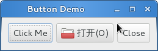
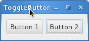
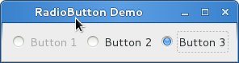
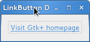
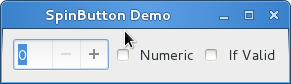

按钮控件¶
按钮¶
按钮控件是另一个经常使用的控件。按钮通常会添加一个当点击按钮时要调用的函数。
Gtk.Button 按钮控件可以包含任何有效的子控件，即可以包含绝大多数的其他标准的
Gtk.Widget 控件。最常会添加的子控件是 Gtk.Label 。
通常，你想要连接一个按钮的 “clicked” 信号，该信号当你按下并释放鼠标按钮时会触发。
按钮对象¶
-
class
Gtk.Button([label[, stock[, use_underline]]])¶ 如果lable不是
None，会创建一个带有Gtk.Label的Gtk.Button按钮， 标签会包含给定的文本。如果 stock 不为
None，创建的按钮包含 stock item 的图像和文本。如果 use_underline 为
True, 则label中的下划线后面的字符为助记符加速键。-
set_label(label)¶
设置按钮标签的内容为 label 。
-
set_use_underline(use_underline)¶
如果为 True ，按钮标签文本中的下划线预示着下一个字符用于助记符加速键。
-
例子¶
1 2 3 4 5 6 7 8 9 10 11 12 13 14 15 16 17 18 19 20 21 22 23 24 25 26 27 28 29 30 31 32 33 34 35 36 37 38 39 40 | #!/usr/bin/eny python
#coding:utf-8
from gi.repository import Gtk
class ButtonWindow(Gtk.Window):
def __init__(self):
Gtk.Window.__init__(self, title='Button Demo')
self.set_border_width(10)
hbox = Gtk.Box(spacing=6)
self.add(hbox)
button = Gtk.Button('Click Me')
button.connect('clicked', self.on_click_me_clicked)
hbox.pack_start(button, True, True, 0)
button = Gtk.Button(stock=Gtk.STOCK_OPEN)
button.connect('clicked', self.on_open_clicked)
hbox.pack_start(button, True, True, 0)
button = Gtk.Button('_Close', use_underline=True)
button.connect('clicked', self.on_close_clicked)
hbox.pack_start(button, True, True, 0)
def on_click_me_clicked(self, button):
print '"click me" button was clicked'
def on_open_clicked(self, button):
print '"open" button was clicked'
def on_close_clicked(self, button):
print 'Closing application'
Gtk.main_quit()
wind = ButtonWindow()
wind.connect('delete-event', Gtk.main_quit)
wind.show_all()
Gtk.main()
|
ToggleButton¶
Gtk.ToggleButton 与 Gtk.Button 非常类似，但是当点击后，
Toggle按钮保持激活状态，知道再次点击。当按钮的状态改变时， “toggled” 信号会被触发。
要获得 Gtk.ToggleButton 的状态，我们可以调用 Gtk.ToggleButton.get_active() 方法，
如果Toggle按钮处于按下状态，函数返回 True 。
当然你也可以设置Toggle按钮的状态——通过 Gtk.ToggleButton.set_active() 方法。
如果你这样做了，并且Toggle按钮的状态变了，那么 “toggle” 信号会被触发。
ToggleButton 对象¶
-
class
Gtk.ToggleButton([label[, stock[, use_underline]]])¶ 参数与
Gtk.Button的构造函数一样。-
get_active()¶
返回Toggle按钮当前的状态。如果按钮处于按下状态返回
True，否则返回False。-
set_active(is_active)¶
设置Toggle按钮的状态，如果想设置按钮为按下状态则传递
True，否则传递``False`` 。 会导致 “toggle” 信号被触发。-
例子¶
1 2 3 4 5 6 7 8 9 10 11 12 13 14 15 16 17 18 19 20 21 22 23 24 25 26 27 28 29 30 31 32 33 34 | #!/usr/bin/eny python
#coding:utf-8
from gi.repository import Gtk
class ToggleButtonWindow(Gtk.Window):
def __init__(self):
Gtk.Window.__init__(self, title="ToggleButton Demo")
self.set_border_width(10)
hbox = Gtk.Box(spacing=6)
self.add(hbox)
button = Gtk.ToggleButton("Button 1")
button.connect('toggled', self.on_button_toggled, '1')
hbox.pack_start(button, True, True, 0)
button = Gtk.ToggleButton("B_utton 2", use_underline=True)
button.set_active(True)
button.connect('toggled', self.on_button_toggled, '2')
hbox.pack_start(button, True, True, 0)
def on_button_toggled(self, button, name):
if button.get_active():
state = 'on'
else:
state = 'off'
print 'Button', name, 'was tunned', state
wind = ToggleButtonWindow()
wind.connect('delete-event', Gtk.main_quit)
wind.show_all()
Gtk.main()
|
CheckButton（复选按钮）¶
Gtk.CheckButton 继承自 Gtk.ToggleButton 。唯一的不同是
Gtk.CheckButton 外观。 Gtk.CheckButton 会在
Gtk.ToggleButton 的旁边放置一个分离的控件——通常是一个 Gtk.Label 。
“toggled” 信号， Gtk.ToggleButton.set_active() 与
Gtk.ToggleButton.get_active() 则继承过来了。
CheckButton 对象¶
-
class
Gtk.CheckButton([label[, stock[, use_underline]]])¶ 参数与
Gtk.Button同。
RadioButton（单选按钮）¶
与复选按钮一样，单选按钮也是继承自 Gtk.ToggleButton ，但是单选按钮
按照组的方式来工作，并且在组中只有一个 Gtk.RadioButton 可以被选中。
因此，Gtk.RadioButton 是一种让用户从很多选项中选择一个的方法。
单选按钮Radio buttons可以使用以下任何一个静态函数创建：
Gtk.RadioButton.new_from_widget() ，
Gtk.RadioButton.new_with_label_from_widget() 或者
Gtk.RadioButton.new_with_mnemonic_from_widget() 。
一个组中第一个radio button创建时 group 参数传递 None ，在随后的调用中，
你想要将此按钮加入的组应该作为参数传递。
当第一次运行时，组内的第一个radio按钮会是激活状态的。可以通过
Gtk.ToggleButton.set_active() 传递 True 来修改。
在创建后改变 Gtk.RadioButton 控件的分组信息可以通过调用
Gtk.RadioButton.join_group() 来实现。
RadioButton 对象¶
-
class
Gtk.RadioButton¶ -
static
new_from_widget(group)¶ 创建一个新的
Gtk.RadioButton，将其添加到与 group 控件同一组中。 如果 group 为None，会创建一个新的组。
-
static
new_with_label_from_widget(group, label)¶ 创建一个
Gtk.RadioButton。标签控件内的文本会被设置为 lable 。 group 参数与new_from_widget()相同。
-
static
new_with_mnemonic_from_widget(group, label)¶ 与
new_with_label_from_widget()相同，但是 label 中的下划线会被解析为按钮的助记符。
-
join_group(group)¶ 将radio button加入到另一个
Gtk.RadioButton对象的组中。
-
static
Example¶
1 2 3 4 5 6 7 8 9 10 11 12 13 14 15 16 17 18 19 20 21 22 23 24 25 26 27 28 29 30 31 32 33 34 35 36 37 38 | #!/usr/bin/env python
#coding:utf-8
from gi.repository import Gtk
class RadioButtonWindow(Gtk.Window):
def __init__(self):
Gtk.Window.__init__(self, title="RadioButton Demo")
self.set_border_width(10)
hbox = Gtk.Box(spacing=6)
self.add(hbox)
button1 = Gtk.RadioButton.new_with_label_from_widget(None, "Button 1")
button1.connect('toggled', self.on_button_toggled, '1')
hbox.pack_start(button1, False, False, 0)
button2 = Gtk.RadioButton.new_from_widget(button1)
button2.set_label('Button 2')
button2.connect('toggled', self.on_button_toggled, '2')
hbox.pack_start(button2, False, False, 0)
button3 = Gtk.RadioButton.new_with_mnemonic_from_widget(button1, "B_utton 3")
button3.connect('toggled', self.on_button_toggled, '3')
hbox.pack_start(button3, False, False, 0)
def on_button_toggled(self, button, name):
if button.get_active():
state = 'on'
else:
state = 'off'
print 'Button', name, 'was turned', state
wind = RadioButtonWindow()
wind.connect('delete-event', Gtk.main_quit)
wind.show_all()
Gtk.main()
|
LinkButton¶
Gtk.LinkButton 是带有链接的 Gtk.Button 。与浏览器中使用的链接类似——
当点击时会触发一个动作，当要快速的链接到一个资源时很有用。
绑定到 Gtk.LinkButton 的URI可以通过
Gtk.LinkButton.set_uri() 来设置，可以通过 Gtk.LinkButton.get_uri() 来获取绑定的URI。
LinkButton 对象¶
Example¶
1 2 3 4 5 6 7 8 9 10 11 12 13 14 15 16 17 18 | #!/usr/bin/env python
#coding:utf-8
from gi.repository import Gtk
class LinkButtonWindow(Gtk.Window):
def __init__(self):
Gtk.Window.__init__(self, title='LinkButton Demo')
self.set_border_width(10)
button = Gtk.LinkButton('http://www.gtk.org', 'Visit Gtk+ homepage')
self.add(button)
wind = LinkButtonWindow()
wind.connect('delete-event', Gtk.main_quit)
wind.show_all()
Gtk.main()
|
SpinButton¶
Gtk.SpinButton 是一种让用户设置某些属性的值的完美方法。
Gtk.SpinButton 不是让用户直接在 Gtk.Entry 中输入一个数字，
而是提供两个箭头让用户增加或减小显示的值。值也可以直接输入，可以附加检查以保证
输入的值在要求的范围内。 Gtk.SpinButton 的主要属性通过
Gtk.Adjustment 来设置。
要改变 Gtk.SpinButton 显示的值，使用 Gtk.SpinButton.set_value() 。
通过:meth:Gtk.SpinButton.get_value 或者 Gtk.SpinButton.get_value_as_int() 获取按钮的值——
根据你的要求可以是整数或浮点值。
当spin button显示浮点数时，你可以通过
Gtk.SpinButton.set_digits() 调整显示的浮点数的位数。
默认情况下， Gtk.SpinButton 接受文本数据。如果你想限制其为数值，可以调用
Gtk.SpinButton.set_numeric() ，并传递 True 。
我们也可以设置 Gtk.SpinButton 显示的更新策略。有两种可选:
默认是即使输入的数据不合法也会显示；
我们也可以设置为只有输入的值正确时才需要更新——通过调用
Gtk.SpinButton.set_update_policy() 。
SpinButton 对象¶
-
class
Gtk.SpinButton¶ -
set_adjustment(adjustment)¶ 替换与该spin button关联的
Gtk.Adjustment。
-
set_digits(digits)¶ 设置spin button显示的精度——最高可以支持20个数字。
-
set_increments(step, page)¶ 设置按钮值增加的 step 和 page 。这会影响当按钮的箭头按下时值的变化速度。 step是按下上下键改变的值大小，page则是指按下page up/down是改变的值大小。
-
set_value(value)¶ 设置按钮的值。
-
get_value()¶ 返回按钮的值——浮点数类型。
-
get_value_as_int()¶ 获取按钮的值——整型。
-
set_numeric(numeric)¶ 如果 numeric 为
False，非数字的文本可以输入给spin button，否则只允许输入数值。
-
set_update_policy(policy)¶ 设置按钮的更新行为。这决定了按钮的值是总会更新还是只有值合法时才会更新。 policy 参数的值可以是
Gtk.SpinButtonUpdatePolicy.ALWAYS或者Gtk.SpinButtonUpdatePolicy.IF_VALID。
-
Adjustment 对象¶
-
class
Gtk.Adjustment(value, lower, upper, step_increment, page_increment, page_size)¶ Gtk.Adjustment对象代表一个有最大与最小界限的值，也包含每次增加的 step和pagement。这在一些Gtk+窗口控件中使用，包括Gtk.SpinButton，Gtk.Viewport和Gtk.Range。value 为初始值， lower 为最小值， upper 为最大值， step_increment 为每次up/down键增加/减小的值， page_increment 是 按下page up/down键改变的值大小，而 page_size 代表页大小。
Example¶
1 2 3 4 5 6 7 8 9 10 11 12 13 14 15 16 17 18 19 20 21 22 23 24 25 26 27 28 29 30 31 32 33 34 35 36 37 38 39 40 41 | #!/usr/bin/env python
#coding:utf-8
from gi.repository import Gtk
class SpinButtonWindow(Gtk.Window):
def __init__(self):
Gtk.Window.__init__(self, title='SpinButton Demo')
self.set_border_width(10)
hbox = Gtk.Box(spacing=6)
self.add(hbox)
adjustment = Gtk.Adjustment(0, 0, 100, 1, 10, 0)
self.spinbutton = Gtk.SpinButton()
self.spinbutton.set_adjustment(adjustment)
hbox.pack_start(self.spinbutton, False, False, 0)
check_numeric = Gtk.CheckButton("Numeric")
check_numeric.connect('toggled', self.on_numeric_toggled)
hbox.pack_start(check_numeric, False, False, 0)
check_ifvalid = Gtk.CheckButton('If Valid')
check_ifvalid.connect('toggled', self.on_ifvalid_toggled)
hbox.pack_start(check_ifvalid, False, False, 0)
def on_numeric_toggled(self, button):
self.spinbutton.set_numeric(button.get_active())
def on_ifvalid_toggled(self, button):
if button.get_active():
policy = Gtk.SpinButtonUpdatePolicy.IF_VALID
else:
policy = Gtk.SpinButtonUpdatePolicy.ALWAYS
self.spinbutton.set_update_policy(policy)
win = SpinButtonWindow()
win.connect('delete-event', Gtk.main_quit)
win.show_all()
Gtk.main()
|